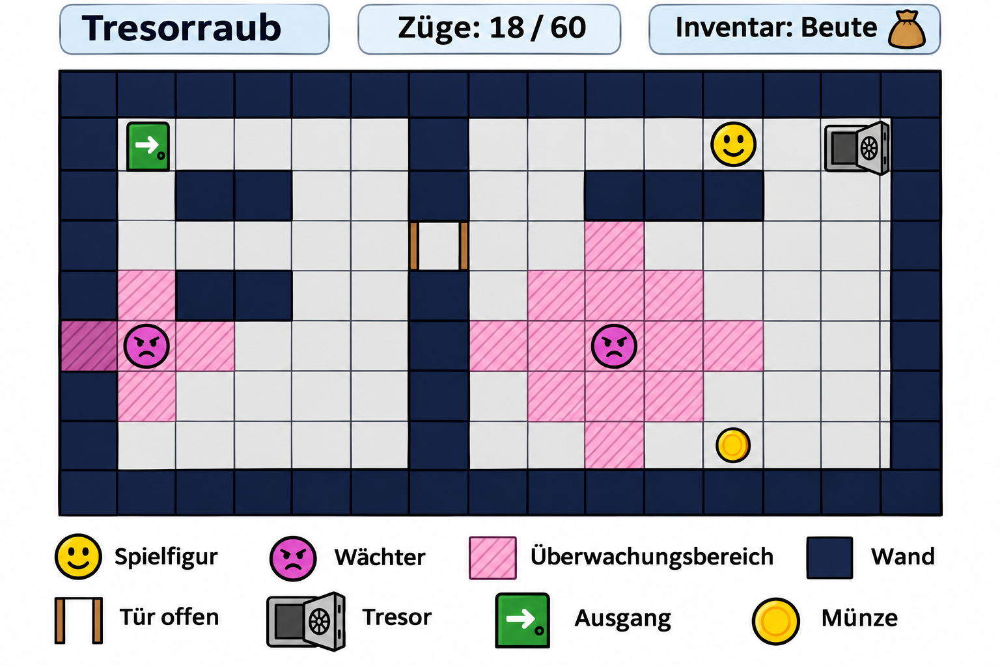

Vom Problem zum Programm II
In Block 1 haben Sie bereits Programme in Teilaufgaben zerlegt und eigene Funktionen entwickelt. Jetzt betrachten Sie ein größeres Vorhaben: In den kommenden Kapiteln entsteht schrittweise ein kleines Spiel.
Bevor Sie einzelne Bestandteile programmieren, machen Sie sich mit dem Ziel vertraut und entwickeln einen ersten eigenen Plan. Dabei arbeiten Sie mit Ihrem bisherigen Wissen. Neue Konzepte aus den folgenden Kapiteln müssen Sie noch nicht beherrschen.
Das Zielbild: Ein Tresorraub
Sie steuern eine Spielfigur durch einen Raum und versuchen, die Beute aus einem Tresor zum Ausgang zu bringen. Dabei müssen Sie Hindernisse überwinden und den Wächtern ausweichen.
Das Spielfeld wird von oben dargestellt. Es besteht aus einzelnen Feldern. Die Spielfigur kann sich jeweils ein Feld nach oben, unten, links oder rechts bewegen. Diagonale Bewegungen sind nicht vorgesehen.
Wände verhindern das Durchgehen. Auch der Rand des Spielfelds darf nicht überschritten werden. Ist eine Bewegung blockiert, bleibt die Figur an ihrer bisherigen Position.
Eine verschlossene Tür versperrt den Weg zum Tresor. Im Raum liegt ein Schlüssel. Wenn die Spielfigur das Schlüsselfeld betritt, nimmt sie ihn automatisch auf und trägt ihn im Inventar mit sich. Mit diesem Schlüssel kann sie die Tür aufschließen und öffnen. Das geschieht beim Betreten des Türfelds. Der Schlüssel wird dabei verbraucht und verschwindet aus dem Inventar. Die geöffnete Tür bleibt anschließend offen und kann ohne weiteren Schlüssel passiert werden.
Die Wächter bleiben an ihren Positionen stehen. Jeder Wächter besitzt einen festgelegten Überwachungsbereich, der auf dem Spielfeld sichtbar markiert ist. Steht die Spielfigur nach einer erfolgreichen Bewegung in einem solchen Bereich, wird sie entdeckt und das Spiel endet. Auch das Feld eines Wächters gehört zu seinem Überwachungsbereich. Für dieses vereinfachte Spiel gelten die markierten Bereiche unabhängig davon, ob eine Wand dazwischenliegt.
Beim Betreten des Tresorfelds nimmt die Figur die Beute automatisch auf. Die Beute erscheint anschließend im Inventar. Danach muss sie zum Ausgang zurückkehren. Erst wenn sie den Ausgang mit der Beute erreicht, ist das Spiel gewonnen. Den Ausgang vorher zu betreten, beendet das Spiel nicht.
Eine zusätzliche Münze kann eingesammelt werden. Sie ist für den Sieg nicht erforderlich.
Für den gesamten Raub stehen 60 Züge zur Verfügung:
- Eine erfolgreiche Bewegung um ein Feld verbraucht einen Zug.
- Eine blockierte Bewegung verbraucht keinen Zug.
- Unbekannte Eingaben verändern den Spielzustand nicht und verbrauchen keinen Zug.
- Das Ausgeben des aktuellen Spielstands und das erneute Zeichnen des Spielfelds verbrauchen keinen Zug.
Wird die Figur entdeckt oder erreicht sie den Ausgang nicht rechtzeitig mit der Beute, ist das Spiel verloren. Ein erfolgreicher Abschluss im 60. Zug zählt noch als Sieg.
Die grafische Darstellung soll Positionen und Veränderungen nachvollziehbar anzeigen: Ein aufgenommener Gegenstand verschwindet vom Spielfeld und erscheint im Inventar. Eine geöffnete Tür sieht anders aus als eine verschlossene. Gewinn und Niederlage werden erkennbar dargestellt.
Auf Anforderung kann der aktuelle Spielstand zusätzlich als Text ausgegeben werden. Die Ausgabe enthält die Position der Spielfigur, den Inhalt des Inventars, die Zahl der verbrauchten Züge sowie die Zustände von Tür, Tresor und einsammelbaren Gegenständen. Sie verändert den Spielstand nicht und verbraucht keinen Zug.

a) Die Aufgabenstellung verstehen
Überprüfen Sie zunächst, ob Sie die Spielregeln verstanden haben. Wählen Sie bei jeder Frage alle zutreffenden Antworten aus. Eine oder mehrere Antworten können richtig sein.
b) Anforderungen und Sonderfälle festhalten
Beschreiben Sie nun mit eigenen Worten, was das Spiel leisten muss.
Spielbestandteile und ihre Aufgaben
Notieren Sie, welche Bestandteile Sie in der Beschreibung erkennen. Halten Sie für jeden Bestandteil fest:
- Was muss er können oder bewirken?
- Welche Informationen sind dafür wichtig?
- Mit welchen anderen Bestandteilen hängt sein Verhalten zusammen?
Betrachten Sie dabei sowohl die Dinge im Spiel als auch übergreifende Aufgaben des Programms.
Ein Beispiel für einen Spielbestandteil ist die Spielfigur: Sie muss ihre Position verändern können. Überlegen Sie selbst, welche weiteren Anforderungen damit verbunden sind.
Sie können Ihre Überlegungen als Stichpunkte, Skizze oder gegliederte Liste festhalten. C-Code ist hier noch nicht erforderlich.
Sonderfälle
Überlegen Sie anschließend, in welchen Situationen eine Aktion nicht wie im Normalfall ablaufen kann oder mehrere Regeln gleichzeitig eine Rolle spielen.
Beschreiben Sie jeweils die Situation und das erwartete Verhalten des Spiels.
Betrachten Sie beispielsweise einen Versuch, das Spielfeld zu verlassen. Ergänzen Sie weitere eigene Fälle. Prüfen Sie dabei auch das Zusammenspiel mehrerer Bestandteile.
c) Einen ersten Programmplan entwickeln
Überlegen Sie, wie Sie die erkannten Aufgaben aufteilen würden.
Halten Sie fest:
- Welche Aufgaben gehören aus Ihrer Sicht zusammen?
- Welcher Bestandteil sollte für welche Aufgabe verantwortlich sein?
- Welche Informationen müssen zwischen den Bestandteilen ausgetauscht werden?
- Welche Entscheidungen betreffen mehrere Bestandteile gleichzeitig?
Skizzieren Sie außerdem, was aus Ihrer Sicht von einem Tastendruck bis zur sichtbaren Veränderung im Fenster geschehen muss.
Sie dürfen dafür Ihre Kenntnisse über Funktionen aus Block 1 verwenden. Eine vollständige Liste fertiger Funktionsdefinitionen wird hier noch nicht erwartet.
Ihre Planung ist ein erster Entwurf auf Grundlage Ihres jetzigen Wissens. Es gibt für diese Aufgabe keine vorgegebene technische Lösung, die Sie bereits treffen müssen. Begründen Sie Ihre Überlegungen und kennzeichnen Sie offene Fragen.
d) Die kommenden Kapitel einordnen
Sehen Sie sich die folgenden Kapitelüberschriften an:
- Manpages und Bibliotheksdokumentation
- Header und Quelldateien
- Datenstrukturen
- Pointer und Datenaustausch
- Dynamischer Speicher und Listen
- Objektorientierung in C
- Die Spielbausteine zusammenführen
- Datei-Ein- und -Ausgabe
Überlegen Sie für jede Überschrift, welcher Teil Ihres geplanten Spiels dort behandelt oder erweitert werden könnte.
Notieren Sie eine Vermutung und eine kurze Begründung. Wenn Ihnen eine Zuordnung noch nicht möglich ist, halten Sie stattdessen fest, welche Frage Sie zu diesem Kapitel haben.
Es geht nicht darum, alle Zuordnungen bereits richtig vorzunehmen. Sie müssen die neuen Begriffe noch nicht kennen oder sicher erklären können. Entscheidend ist, dass Sie Ihre bisherigen Vorstellungen festhalten.
Ihren Plan für später aufbewahren
Bewahren Sie Ihren Entwurf einschließlich der offenen Fragen auf.
In den folgenden Kapiteln werden Sie schrittweise durch einen möglichen Aufbau des Spiels geführt. Dabei lernen Sie neue Konzepte kennen und entwickeln die einzelnen Spielbestandteile. Ihre erste Planung muss deshalb nicht unverändert umgesetzt werden.
Beim Zusammenführen der Spielbausteine greifen Sie Ihren Entwurf erneut auf und vergleichen Ihre ursprünglichen Vorstellungen mit dem tatsächlich entstandenen Programm.
Zur nächsten Lektion: Manpages und Bibliotheksdokumentation →